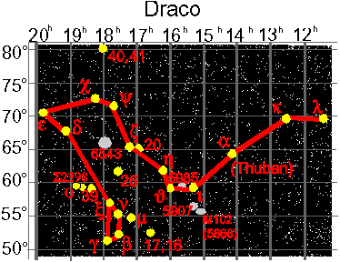

|
Draco Computational Physics System
Trivia
|

|
Transport Methods Group (X-TM)
Applied Theoretical and Computational Physics Division
MS D409, Los Alamos National Laboratory
Los Alamos, New Mexico 87545 USA
|
Draco in Ancient Greece
Draco was a famous Athenian lawgiver in the 7'th
century B.C. He is best known for the harsh penal code that
he enacted.
"And Draco himself, they say, being asked why he made death the
penalty for most offenses, replied that in his opinion the
lesser ones deserved it, and for the greater ones, no heavier
penalty could be found."
--Plutarch, Solon 17.1
Further information is available at the Tuft's University
Perseus Project web site.
Draco in the Night Sky
Draco the dragon, is a circumpolar constellation in the northern hemisphere.
Thuban (Arabic for dragon), alpha draconis, was the pole star in 2700 B.C. Other
interesting astronomical facts can be found at the Constellations
Draco page.

Draco on the World-Wide-Web
People are fascinated with dragons. A entry point into the
extensive web world of dragons can be found at
Here be Dragons home page.
Join the Fun, Go Draconian!

Last updated: 15 Dec 98.
Comments on this page